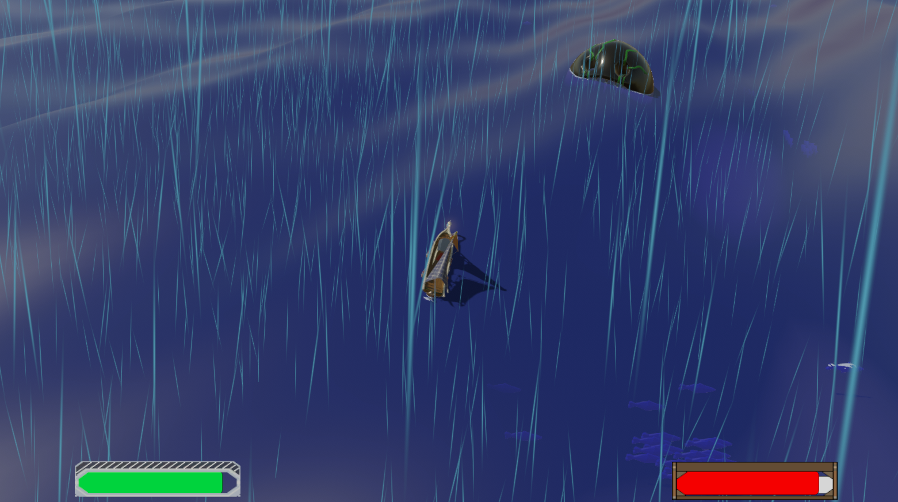
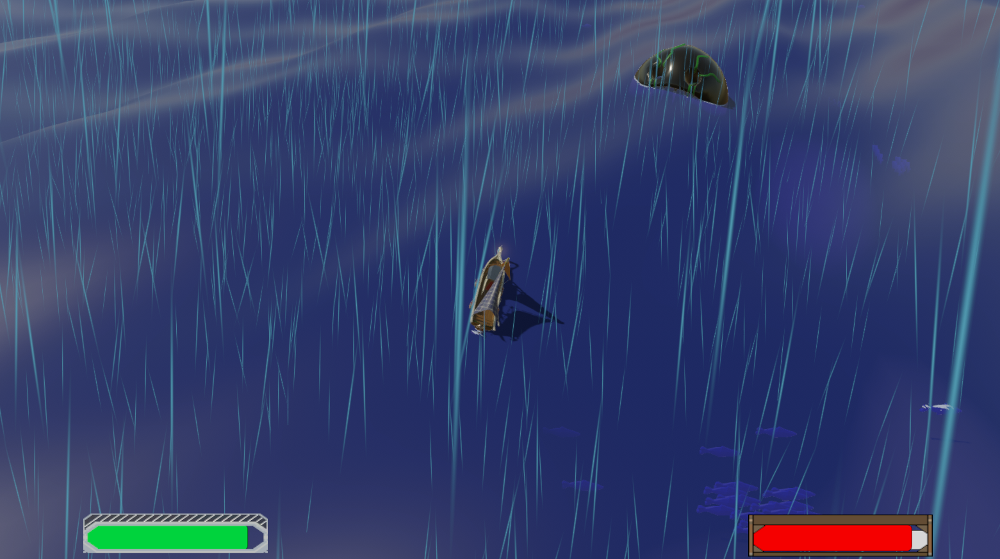

O5tium
Walking simulator confiné
O5tium est un court puzzle game dans lequel le joueur passe 5 jours enfermé dans une chambre à chercher un moyen de sortir. Chaque journée représente une étape de la dépression.


Cyclos
Cryptozoologie aquatique post-apocalyptique
Dans un monde solarpunk submergé par les eaux, incarnez Naya, cryptozoologiste. Naviguez sur des eaux agitées et rencontrez les créatures étranges qui vous entourent. Parlez avec les autres habitants et découvrez le mystère à l’origine du monde de Cyclos dans ce voyage vers l’altérité.
 

GDD_Final_final_V4_Revised
Metajeu autosatirique
C'est un escape game, mais sous forme de jeu vidéo. Essayez de trouver la solution pour terminer le jeu à travers un Game Design Document d'une équipe qui ne s'entend pas, via une enquête mêlant jeu vidéo et GDD. Parcourez le game design document pour trouver les contrôles de ce jeu d'amateurs surmenés et découvrez l'histoire d'un projet qui bat de l'aile.

Daily Very
Simulateur de drone de livraison
N'avez vous jamais rêvé de vivre la vie d'un drone de livraison ? Participez au bonheur des habitants de la mégatour 42 en transportant leurs colis au service de la multinationale Delivzon. Accomplissez votre travail d'IA. Livrez des colis. Respectez vos quotas. Ne quittez pas votre espace aérien.

Nekomimic
Chasse au trésor inversée
Nekomimic est un jeu de plateforme dans lequel le joueur incarne un mimic qui doit échapper à ses poursuivants en se cachant dans un donjon sombre. Créé dans le cadre de la Code Game Jam 2021 (thème : "Chasse au trésor"), ce jeu a aussi remporté le prix du design.

Epitaph
Platformer nécromantique
Epitaph : A matter of Life and Death est un jeu d'énigme en coop dans lequel la Vie et la Mort doivent utiliser leurs pouvoirs pour arriver à la fin du niveau. Ce jeu a été créé dans le cadre de la Code Game Jam 2020, qui était placée sous le thème de "Cute and Creepy". Epitaph a obtenu le prix du design de la compétition.